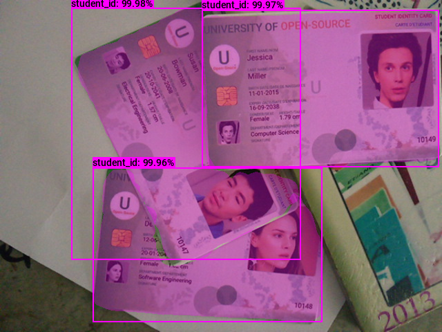

Exporting Mask R-CNN Models from PyTorch to ONNX
- Introduction
- Getting Started with the Code
- Setting Up Your Python Environment
- Importing the Required Dependencies
- Setting Up the Project
- Loading the Checkpoint Data
- Exporting the Model to ONNX
- Performing Inference with ONNX Runtime
- Conclusion
Introduction
Welcome back to this series on training Mask R-CNN models with PyTorch! Previously, we demonstrated how to fine-tune a Mask R-CNN model by training it on a small image dataset of Student ID cards. This tutorial builds on that by showing how to export the model to ONNX and perform inference using ONNX Runtime.
ONNX (Open Neural Network Exchange) is an open format to represent machine learning models and make them portable across various platforms. ONNX Runtime is a cross-platform inference accelerator that provides interfaces to hardware-specific libraries. By exporting our model to ONNX, we can deploy it to multiple devices and leverage hardware acceleration for faster inference. The Mask R-CNN model is computationally intensive, so any improvements to inference speed are welcome.
Additionally, we’ll implement the functionality to annotate images with segmentation masks and bounding boxes without relying on PyTorch as a dependency. By the end of this tutorial, you will have an ONNX version of our Mask R-CNN model that you can deploy to servers and edge devices using ONNX Runtime.
Getting Started with the Code
As with the previous tutorial, the code is available as a Jupyter Notebook.
| Jupyter Notebook | Google Colab |
|---|---|
| GitHub Repository | Open In Colab |
Setting Up Your Python Environment
We’ll need to add a few new libraries to our Python environment for working with ONNX models.
Run the following command to install these additional libraries:
# Install ONNX packages
pip install onnx onnxruntime onnx-simplifierImporting the Required Dependencies
With our environment updated, we can dive into the code. First, we will import the necessary Python dependencies into our Jupyter Notebook.
# Import Python Standard Library dependencies
import json
from pathlib import Path
import random
# Import utility functions
from cjm_psl_utils.core import download_file
from cjm_pil_utils.core import resize_img
# Import numpy
import numpy as np
# Import the pandas package
import pandas as pd
# Import PIL for image manipulation
from PIL import Image, ImageDraw, ImageFont
# Import PyTorch dependencies
import torch
# Import Mask R-CNN
from torchvision.models.detection import maskrcnn_resnet50_fpn_v2, MaskRCNN
from torchvision.models.detection import MaskRCNN_ResNet50_FPN_V2_Weights
from torchvision.models.detection.faster_rcnn import FastRCNNPredictor
from torchvision.models.detection.mask_rcnn import MaskRCNNPredictor
# Import ONNX dependencies
import onnx # Import the onnx module
from onnxsim import simplify # Import the method to simplify ONNX models
import onnxruntime as ort # Import the ONNX RuntimeSetting Up the Project
In this section, we’ll set the folder locations for our project and training session with the PyTorch checkpoint. Let’s also ensure we have a font file for annotating images.
Set the Directory Paths
# The name for the project
project_name = f"pytorch-mask-r-cnn-instance-segmentation"
# The path for the project folder
project_dir = Path(f"./{project_name}/")
# Create the project directory if it does not already exist
project_dir.mkdir(parents=True, exist_ok=True)
# The path to the checkpoint folder
checkpoint_dir = Path(project_dir/f"2023-09-19_15-17-57")
pd.Series({
"Project Directory:": project_dir,
"Checkpoint Directory:": checkpoint_dir,
}).to_frame().style.hide(axis='columns')| Project Directory: | pytorch-mask-r-cnn-instance-segmentation |
|---|---|
| Checkpoint Directory: | pytorch-mask-r-cnn-instance-segmentation/2023-09-19_15-17-57 |
Download a Font File
# Set the name of the font file
font_file = 'KFOlCnqEu92Fr1MmEU9vAw.ttf'
# Download the font file
download_file(f"https://fonts.gstatic.com/s/roboto/v30/{font_file}", "./")Loading the Checkpoint Data
Now, we can load the colormap used during training and initialize a Mask R-CNN model with the saved checkpoint.
Load the Colormap
# The colormap path
colormap_path = list(checkpoint_dir.glob('*colormap.json'))[0]
# Load the JSON colormap data
with open(colormap_path, 'r') as file:
colormap_json = json.load(file)
# Convert the JSON data to a dictionary
colormap_dict = {item['label']: item['color'] for item in colormap_json['items']}
# Extract the class names from the colormap
class_names = list(colormap_dict.keys())
# Make a copy of the colormap in integer format
int_colors = [tuple(int(c*255) for c in color) for color in colormap_dict.values()]Load the Model Checkpoint
# The model checkpoint path
checkpoint_path = list(checkpoint_dir.glob('*.pth'))[0]
# Load the model checkpoint onto the CPU
model_checkpoint = torch.load(checkpoint_path, map_location='cpu')Load the Trained Mask R-CNN Model
# Initialize a Mask R-CNN model
model = maskrcnn_resnet50_fpn_v2(weights='DEFAULT')
# Get the number of input features for the classifier
in_features_box = model.roi_heads.box_predictor.cls_score.in_features
in_features_mask = model.roi_heads.mask_predictor.conv5_mask.in_channels
# Replace the box predictor
model.roi_heads.box_predictor = FastRCNNPredictor(in_features_box, len(class_names))
# Replace the mask predictor
model.roi_heads.mask_predictor = MaskRCNNPredictor(in_channels=in_features_mask, dim_reduced=256, num_classes=len(class_names))
# Initialize the model with the checkpoint parameters and buffers
model.load_state_dict(model_checkpoint)<All keys matched successfully>Exporting the Model to ONNX
Before exporting the model, let’s ensure the model is in evaluation mode.
model.eval();Prepare the Input Tensor
We need a sample input tensor for the export process.
input_tensor = torch.randn(1, 3, 256, 256)Export the Model to ONNX
We can export the model using PyTorch’s torch.onnx.export() function. This function performs a single pass through the model and records all operations to generate a TorchScript graph. It then exports this graph to ONNX by decomposing each graph node (which contains a PyTorch operator) into a series of ONNX operators.
If we want the ONNX model to support different input sizes, we must set the width and height input axes as dynamic.
# Set a filename for the ONNX model
onnx_file_path = f"{checkpoint_dir}/{colormap_path.stem.removesuffix('-colormap')}-{checkpoint_path.stem}.onnx"
# Export the PyTorch model to ONNX format
torch.onnx.export(model.cpu(),
input_tensor.cpu(),
onnx_file_path,
export_params=True,
do_constant_folding=False,
input_names = ['input'],
output_names = ['boxes', 'labels', 'scores', 'masks'],
dynamic_axes={'input': {2 : 'height', 3 : 'width'}}
)============= Diagnostic Run torch.onnx.export version 2.0.1+cu118 =============
verbose: False, log level: Level.ERROR
======================= 0 NONE 0 NOTE 0 WARNING 0 ERROR ========================The export function may return some UserWarning messages when we export the model. We can ignore these warnings as the exported model functions as expected.
Simplify the ONNX model
The ONNX models generated by PyTorch are not always the most concise. We can use the onnx-simplifier package to tidy up the exported model.
# Load the ONNX model from the onnx_file_name
onnx_model = onnx.load(onnx_file_path)
# Simplify the model
model_simp, check = simplify(onnx_model)
# Save the simplified model to the onnx_file_name
onnx.save(model_simp, onnx_file_path)Performing Inference with ONNX Runtime
Now that we have our ONNX model, it’s time to test it with ONNX Runtime.
Create an Inference Session
We interact with models in ONNX Runtime through an InferenceSession object. Here we can specify which Execution Providers to use for inference and other configuration information. Execution Providers are the interfaces for hardware-specific inference engines like TensorRT for NVIDIA and OpenVINO for Intel. By default, the InferenceSession uses the generic CPUExecutionProvider.
# Load the model and create an InferenceSession
session = ort.InferenceSession(onnx_file_path, providers=['CPUExecutionProvider'])Define Utility Functions
In the previous tutorial, we used PyTorch to annotate images with segmentation masks and bounding boxes. Now, we will implement that functionality using NumPy and PIL.
Define a function to annotate an image with segmentation masks¶
We can convert the grayscale segmentation masks produced by the model to color and paste them onto the input image. We can also adjust the transparency of the segmentation masks using an alpha parameter, as we did with PyTorch.
def draw_masks_pil(image, masks, labels, colors, alpha=0.3):
"""
Annotates an image with segmentation masks, labels, and optional alpha blending.
This function draws segmentation masks on the provided image using the given mask arrays,
colors, labels, and alpha values for transparency.
Parameters:
image (PIL.Image): The input image on which annotations will be drawn.
masks (numpy.ndarray): A 3D numpy array of shape (n_masks, height, width) representing segmentation masks.
labels (list of str): A list of labels corresponding to each segmentation mask.
colors (list of tuples): A list of RGB tuples for each segmentation mask and its corresponding label.
alpha (float, optional): The alpha value for mask transparency. Defaults to 0.3.
threshold (float, optional): The threshold value to convert mask to binary. Defaults to 0.5.
Returns:
annotated_image (PIL.Image): The image annotated with segmentation masks and labels.
"""
# Create a copy of the image
annotated_image = image.copy()
annotated_image.convert('RGBA')
# Create an ImageDraw object for drawing on the image
draw = ImageDraw.Draw(annotated_image)
# Loop through the bounding boxes and labels in the 'annotation' DataFrame
for i in range(len(labels)):
# Get the segmentation mask
mask = masks[i][0, :, :]
mask_color = [*colors[i], alpha*255]
# Create an empty 3D array with shape (height, width, 3)
rgb_mask = np.zeros((mask.shape[0], mask.shape[1], 4), dtype=np.uint8)
# Use broadcasting to populate it with the mask color where the mask is 1
rgb_mask[mask > threshold] = mask_color
# Convert the numpy array to a PIL Image
mask_img = Image.fromarray(rgb_mask)
# Draw segmentation mask on sample image
annotated_image.paste(mask_img, (0,0), mask=mask_img)
return annotated_imageDefine a function to annotate an image with bounding boxes
Now, we only need to annotate images with bounding boxes and labels. PIL includes functionality to draw boxes and write text on images. The following function also scales the font size based on the image resolution to keep the relative size consistent across images.
def draw_bboxes_pil(image, boxes, labels, colors, font, width:int=2, font_size:int=18, probs=None):
"""
Annotates an image with bounding boxes, labels, and optional probability scores.
This function draws bounding boxes on the provided image using the given box coordinates,
colors, and labels. If probabilities are provided, they will be added to the labels.
Parameters:
image (PIL.Image): The input image on which annotations will be drawn.
boxes (list of tuples): A list of bounding box coordinates where each tuple is (x, y, w, h).
labels (list of str): A list of labels corresponding to each bounding box.
colors (list of str): A list of colors for each bounding box and its corresponding label.
font (str): Path to the font file to be used for displaying the labels.
width (int, optional): Width of the bounding box lines. Defaults to 2.
font_size (int, optional): Size of the font for the labels. Defaults to 25.
probs (list of float, optional): A list of probability scores corresponding to each label. Defaults to None.
Returns:
annotated_image (PIL.Image): The image annotated with bounding boxes, labels, and optional probability scores.
"""
# Define a reference diagonal
REFERENCE_DIAGONAL = 1000
# Scale the font size using the hypotenuse of the image
font_size = int(font_size * (np.hypot(*image.size) / REFERENCE_DIAGONAL))
# Add probability scores to labels
if probs is not None:
labels = [f"{label}: {prob*100:.2f}%" for label, prob in zip(labels, probs)]
# Create a copy of the image
annotated_image = image.copy()
# Create an ImageDraw object for drawing on the image
draw = ImageDraw.Draw(annotated_image)
# Loop through the bounding boxes and labels in the 'annotation' DataFrame
for i in range(len(labels)):
# Get the bounding box coordinates
x, y, x2, y2 = boxes[i]
# Create a tuple of coordinates for the bounding box
shape = (x, y, x2, y2)
# Draw the bounding box on the image
draw.rectangle(shape, outline=colors[i], width=width)
# Load the font file
fnt = ImageFont.truetype(font, font_size)
# Draw the label box on the image
label_w, label_h = draw.textbbox(xy=(0,0), text=labels[i], font=fnt)[2:]
draw.rectangle((x, y-label_h, x+label_w, y), outline=colors[i], fill=colors[i], width=width)
# Draw the label on the image
draw.multiline_text((x, y-label_h), labels[i], font=fnt, fill='black' if np.mean(colors[i]) > 127.5 else 'white')
return annotated_imageWith our utility functions taken care of, we can select an image to test our ONNX model.
Select a Test Image
We can download an image from the dataset repository to verify the exported model performs as expected.
test_img_name = "10147.jpg"
test_img_url = f"https://raw.githubusercontent.com/cj-mills/pytorch-for-information-extraction/master/code/datasets/detection/student-id/{test_img_name}"
download_file(test_img_url, './', False)
test_img = Image.open(test_img_name)
display(test_img)
pd.Series({
"Test Image Size:": test_img.size,
}).to_frame().style.hide(axis='columns')| Test Image Size: | (640, 480) |
|---|
Prepare the Test Image
# Set test image size
test_sz = 512
# Resize the test image
input_img = resize_img(test_img, target_sz=test_sz, divisor=1)
# Calculate the scale between the source image and the resized image
min_img_scale = min(test_img.size) / min(input_img.size)
display(input_img)
# Print the prediction data as a Pandas DataFrame for easy formatting
pd.Series({
"Source Image Size:": test_img.size,
"Input Dims:": input_img.size,
"Min Image Scale:": min_img_scale,
"Input Image Size:": input_img.size
}).to_frame().style.hide(axis='columns')| Source Image Size: | (640, 480) |
|---|---|
| Input Dims: | (682, 512) |
| Min Image Scale: | 0.937500 |
| Input Image Size: | (682, 512) |
Prepare the Input Tensor
When we convert the PIL input image to a NumPy array, we need to reorder the array values to channels-first format, scale the values from [0,255] to [0,1], and add a batch dimension.
# Convert the input image to NumPy format
input_tensor_np = np.array(input_img, dtype=np.float32).transpose((2, 0, 1))[None]/255Compute the Predictions
Now we can finally perform inference with our ONNX model.
# Run inference
model_output = session.run(None, {"input": input_tensor_np})
# Set the confidence threshold
threshold = 0.45
# Filter the output based on the confidence threshold
scores_mask = model_output[2] > threshold
bbox_list = (model_output[0][scores_mask])*min_img_scale
label_list = [class_names[int(idx)] for idx in model_output[1][scores_mask]]
probs_list = model_output[2]
colors = [int_colors[class_names.index(i)] for i in label_list]
annotated_img = draw_masks_pil(input_img, model_output[-1], label_list, colors, alpha=0.3)
annotated_img = annotated_img.resize(test_img.size)
annotated_img = draw_bboxes_pil(
image=annotated_img,
boxes=bbox_list,
labels=label_list,
probs=probs_list,
colors=colors,
font=font_file,
)
display(annotated_img)
# Print the prediction data as a Pandas Series for easy formatting
pd.Series({
"Predicted BBoxes:": [f"{label}:{bbox}" for label, bbox in zip(label_list, bbox_list.round(decimals=3))],
"Confidence Scores:": [f"{label}: {prob*100:.2f}%" for label, prob in zip(label_list, probs_list)]
}).to_frame().style.hide(axis='columns')
| Predicted BBoxes: | [‘student_id:[103.951 11.201 435.75 375.222]’, ‘student_id:[292.186 14.961 635.188 241.416]’, ‘student_id:[134.958 242.402 466.062 465.765]’] |
|---|---|
| Confidence Scores: | [‘student_id: 99.98%’, ‘student_id: 99.97%’, ‘student_id: 99.96%’] |
The model predictions should be virtually identical to the PyTorch model, but the probability scores can sometimes vary slightly.
- Don’t forget to download the ONNX model from the Colab Environment’s file browser. (tutorial link)
Conclusion
Congratulations on reaching the end of this tutorial! We previously trained a Mask R-CNN model in PyTorch, and now we’ve exported that model to ONNX. With this, we can streamline our deployment process and leverage platform-specific hardware optimizations through ONNX Runtime.
As you move forward, consider exploring more about ONNX and its ecosystem. Check out the available Execution Providers that provide flexible interfaces to different hardware acceleration libraries.
- Feel free to post questions or problems related to this tutorial in the comments below. I try to make time to address them on Thursdays and Fridays.
- I’m Christian Mills, a deep learning consultant specializing in computer vision and practical AI implementations.
- I help clients leverage cutting-edge AI technologies to solve real-world problems.
- Learn more about me or reach out via email at christian@christianjmills.com to discuss your project.